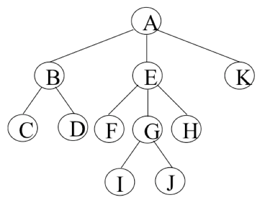
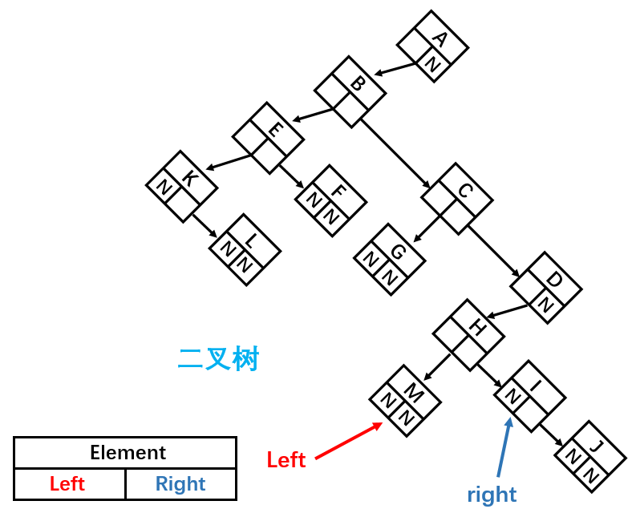
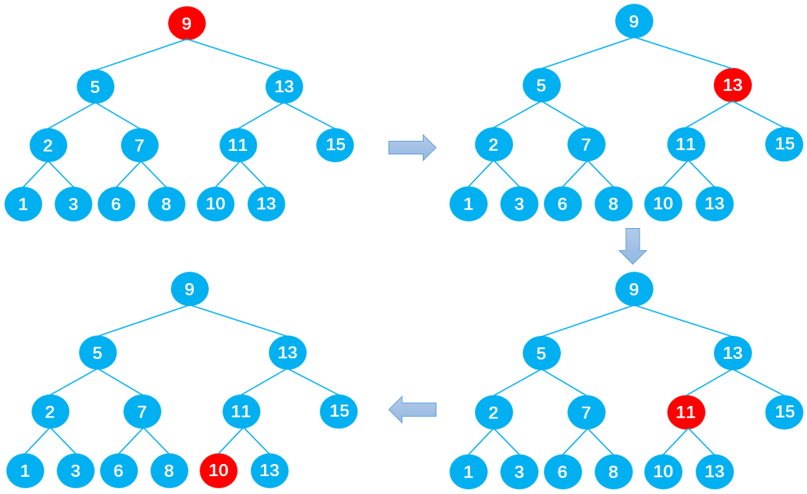
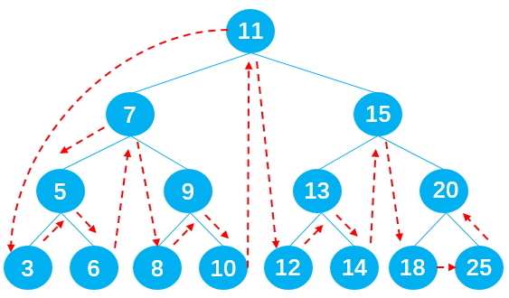

要点：树、二叉树、二叉搜索树详解、平衡树
一、树结构
1.1 什么是树？
真实的树
树其实是一种特殊的图，是一种无环连通图，是一种极大无环图，也是一种极小连通图。
从另一个角度看，树是一种递归的数据结构。而且树的不同表示方法，比如不常用的长子 + 兄弟法，对于 你理解树这种数据结构有着很大用处， 说是一种对树的本质的更深刻的理解也不为过。
1.2 树的特点及优势
1、树一般都有一个根，连接着根的是树干；
2、树干会发生分叉，形成许多树枝，树枝会继续分化成更小的树枝；
3、树枝的最后是叶子；
现实生活中很多结构都是树的抽象，模拟的树结构相当于旋转 180° 的树。

树结构对比于数组/链表/哈希表的优势
数组：
- 优点：可以通过下标值访问，效率高；
- 缺点：查找数据时需要先对数据进行排序，生成有序数组，才能提高查找效率；并且在插入和删除元素时，需要大量的位移操作；
链表：
- 优点：数据的插入和删除操作效率都很高；
- 缺点：查找效率低，需要从头开始依次查找，直到找到目标数据为止；当需要在链表中间位置插入或删除数据时，插入或删除的效率都不高。
哈希表：
- 优点：哈希表的插入/查询/删除效率都非常高；
- 缺点：空间利用率不高，底层使用的数组中很多单元没有被利用；并且哈希表中的元素是无序的，不能按照固定顺序遍历哈希表中的元素；而且不能快速找出哈希表中最大值或最小值这些特殊值。
树结构：
- 优点：树结构综合了上述三种结构的优点，同时也弥补了它们存在的缺点（虽然效率不一定都比它们高），比如树结构中数据都是有序的，查找效率高；空间利用率高；并且可以快速获取最大值和最小值等。
总的来说：每种数据结构都有自己特定的应用场景。
树结构定义：
-
树（Tree）：由 n（n ≥ 0）个节点构成的有限集合。当 n = 0 时，称为空树。
-
对于任意一棵非空树（n > 0），它具备以下性质：
- 树中有一个称为根（Root）的特殊节点，用 r 表示；
- 其余节点可分为 m（m > 0）个互不相交的有限集合 T1，T2，…，Tm，其中每个集合本身又是一棵树，称为原来树的子树（SubTree）。
树的常用术语

节点的度（Degree）：节点的子树个数，比如节点 B 的度为 2；
树的度：树的所有节点中最大的度数，如上图树的度为 2；
叶节点（Leaf）：度为 0 的节点（也称为叶子节点），如上图的 H，I 等；
父节点（Parent）：度不为 0 的节点称为父节点，如上图节点 B 是节点 D 和 E 的父节点；
子节点（Child）：若 B 是 D 的父节点，那么 D 就是 B 的子节点；
兄弟节点（Sibling）：具有同一父节点的各节点彼此是兄弟节点，比如上图的 B 和 C，D 和 E 互为兄弟节点；
路径和路径长度：路径指的是一个节点到另一节点的通道，路径所包含边的个数称为路径长度，比如 A->H 的路径长度为 3；
节点的层次（Level）：规定根节点在 1 层，其他任一节点的层数是其父节点的层数加 1。如 B 和 C 节点的层次为 2；
树的深度（Depth）：树种所有节点中的最大层次是这棵树的深度，如上图树的深度为 4（H、I、J）；
树结构的表示方式
普通树结构如何变换成二叉树
最普通的表示方法

如图，树结构的组成方式类似于链表，都是由一个个节点连接构成。不过，根据每个父节点子节点数量的不同，每一个父节点需要的引用数量也不同。比如节点 A 需要 3 个引用，分别指向子节点 B，C，D；B 节点需要 2 个引用，分别指向子节点 E 和 F；K 节点由于没有子节点，所以不需要引用。
这种方法缺点在于我们无法确定某一结点的引用数。
儿子-兄弟表示法

这种表示方法可以完整地记录每个节点的数据，比如：
1 | //节点A |
这种表示法的优点在于每一个节点中引用的数量都是确定的。
儿子-兄弟表示法旋转
以下为儿子-兄弟表示法组成的树结构：

将其顺时针旋转 45° 之后：

这样就成为了一棵二叉树，由此我们可以得出结论：任何树都可以通过二叉树进行模拟。但是这样父节点不是变了吗？其实，父节点的设置只是为了方便指向子节点，在代码实现中谁是父节点并没有关系，只要能正确找到对应节点即可。
二、二叉树
2.1 二叉树的概念
如果树中的每一个节点最多只能由两个子节点，这样的树就称为二叉树；
2.2 二叉树的组成
二叉树可以为空，也就是没有节点；
若二叉树不为空，则它由根节点和称为其左子树 TL 和右子树 TR 的两个不相交的二叉树组成；
2.3 二叉树的五种形态

上图分别表示：空的二叉树、只有一个节点的二叉树、只有左子树 TL 的二叉树、只有右子树 TR 的二叉树和有左右两个子树的二叉树。
2.4 二叉树的特性
① 一个二叉树的第 i 层的最大节点树为：$2^{i-1}，i >= 1$；
② 深度为 k 的二叉树的最大节点总数为：$2^k - 1 ，k >= 1$；
③ 对任何非空二叉树，若 $n_0$ 表示叶子节点的个数，$n_2$ 表示度为 2 的非叶子节点个数，那么两者满足关系：$n_0 = n_2 + 1$。
如下图所示：H，E，I，J，G 为叶子节点，总数为 5；A，B，C，F 为度为 2 的非叶子节点，总数为 4；满足 $n_0 = n_2 + 1$ 的规律。
2.5 特殊的二叉树
完美二叉树
完美二叉树（Perfect Binary Tree）也成为满二叉树（Full Binary Tree），在二叉树中，除了最下一层的叶子节点外，每层节点都有 2 个子节点，这就构成了完美二叉树。

完全二叉树
完全二叉树（Complete Binary Tree）:
①除了二叉树最后一层外，其他各层的节点数都达到了最大值；
②并且，最后一层的叶子节点从左向右是连续存在，只缺失右侧若干叶子节点；
③完美二叉树是特殊的完全二叉树；
在上图中，由于 H 缺失了右子节点，所以它不是完全二叉树；若 J、K不存在或D的右子节点存在，则是完全二叉树。
2.6 二叉树的数据存储
常见的二叉树存储方式为数组和链表。
使用数组
完全二叉树：按从上到下，从左到右的方式存储数据。

| 节点 | A | B | C | D | E | F | G | H | I |
|---|---|---|---|---|---|---|---|---|---|
| 序号 | 1 | 2 | 3 | 4 | 5 | 6 | 7 | 8 | 9 |
使用数组存储时，取数据的时候也十分方便：左子节点的序号等于父节点序号 _ 2，右子节点的序号等于父节点序号 _ 2 + 1 。
非完全二叉树：非完全二叉树需要转换成完全二叉树才能按照上面的方案存储，这样会浪费很大的存储空间。

| 节点 | A | B | C | ^ | ^ | F | ^ | ^ | ^ | ^ | ^ | ^ | M |
|---|---|---|---|---|---|---|---|---|---|---|---|---|---|
| 序号 | 1 | 2 | 3 | 4 | 5 | 6 | 7 | 8 | 9 | 10 | 11 | 12 | 13 |
使用链表
二叉树最常见的存储方式为链表：每一个节点封装成一个 Node，Node 中包含存储的数据、左节点的引用和右节点的引用。
三、二叉搜索树
二叉搜索树（BST，Binary Search Tree），也称为二叉排序树和二叉查找树。
二叉搜索树是一棵二叉树，可以为空。
如果不为空，则满足以下性质：
- 条件 1：非空左子树的所有键值小于其根节点的键值。比如（三）中节点 6 的所有非空左子树的键值都小于 6；
- 条件 2：非空右子树的所有键值大于其根节点的键值；比如三中节点 6 的所有非空右子树的键值都大于 6；
- 条件 3：左、右子树本身也都是二叉搜索树；
- 条件 4：没有键值相等的节点。
如上图所示，树二和树三符合 3 个条件属于二叉树，树一不满足条件 3 所以不是二叉树。
二叉查找树有一个性质是： 其中序遍历的结果是一个有序数组。
总结：二叉搜索树的特点主要是较小的值总是保存在左节点上，相对较大的值总是保存在右节点上。这种特点使得二叉搜索树的查询效率非常高，这也就是二叉搜索树中“搜索”的来源。
四、二叉搜索树应用举例
下面是一个二叉搜索树：
若想在其中查找数据 10，只需要查找 4 次，查找效率非常高。
- 第 1 次：将 10 与根节点 9 进行比较，由于 10 > 9，所以 10 下一步与根节点 9 的右子节点 13 比较；
- 第 2 次：由于 10 < 13，所以 10 下一步与父节点 13 的左子节点 11 比较；
- 第 3 次：由于 10 < 11，所以 10 下一步与父节点 11 的左子节点 10 比较；
- 第 4 次：由于 10 = 10，最终查找到数据 10 。

同样是 15 个数据，在排序好的数组中查询数据 10，需要查询 10 次：

其实：如果是排序好的数组，可以通过二分查找：第一次找 9，第二次找 13，第三次找 15…。我们发现如果把每次二分的数据拿出来以树的形式表示的话就是二叉搜索树。这就是数组二分法查找效率之所以高的原因。
五、二叉搜索树的封装
二叉搜索树有四个最基本的属性：指向节点的根（root），节点中的键（key）、左指针（right）、右指针（right）。

所以，二叉搜索树中除了定义 root 属性外，还应定义一个节点内部类，里面包含每个节点中的 left、right 和 key 三个属性。
1 | // 节点类 |
5.1 二叉搜索树的常见操作
insert(key) 向树中插入一个新的键。
search(key) 在树中查找一个键，如果节点存在，则返回 true；如果不存在，则返回 false。
preOrderTraverse 通过先序遍历方式遍历所有节点。
inOrderTraverse 通过中序遍历方式遍历所有节点。
postOrderTraverse 通过后序遍历方式遍历所有节点。
min 返回树中最小的值/键。
max 返回树中最大的值/键。
remove(key) 从树中移除某个键。
5.2 插入数据
实现思路：
- 首先根据传入的 key 创建节点对象。
- 然后判断根节点是否存在，不存在时通过：this.root = newNode，直接把新节点作为二叉搜索树的根节点。
- 若存在根节点则重新定义一个内部方法
insertNode()用于查找插入点。
insert(key) 代码实现
1 | // insert(key) 插入数据 |
insertNode() 的实现思路:
根据比较传入的两个节点，一直查找新节点适合插入的位置，直到成功插入新节点为止。
当 newNode.key < node.key 向左查找:
-
情况 1：当 node 无左子节点时，直接插入：
-
情况 2：当 node 有左子节点时，递归调用 insertNode()，直到遇到无左子节点成功插入 newNode 后，不再符合该情况，也就不再调用 insertNode()，递归停止。

当 newNode.key >= node.key 向右查找，与向左查找类似：
-
情况 1：当 node 无右子节点时，直接插入：
-
情况 2：当 node 有右子节点时，依然递归调用 insertNode()，直到遇到传入 insertNode 方法 的 node 无右子节点成功插入 newNode 为止。

insertNode(root, node) 递归代码实现
1 | // 用于比较节点从左边插入还是右边插入 |
过程详解：
以下列二叉搜索树为例：
想要上述的二叉搜索树（蓝色）中插入数据10：
- 先把key = 10 传入insert方法，由于存在根节点 9，所以直接调用insetNode方法，传入的参数：node = 9，newNode = 10；
- 由于10 > 9，进入分支2，向右查找适合插入的位置；
- 由于根节点 9 的右子节点存在且为 13 ，所以进入分支2.2，递归调用insertNode方法，传入的参数：node = 13，newNode = 10；
- 由于 10 < 13 ，进入分支1，向左查找适合插入的位置；
- 由于父节点 13 的左子节点存在且为11，所以进入分支1.2，递归调用insertNode方法，传入的参数：node = 11，newNode = 10；
- 由于 10 < 11，进入分支1，向左查找适合插入的位置；
- 由于父节点 11 的左子节点不存在，所以进入分支1.1，成功插入节点 10 。由于不符合分支1.2的条件所以不会继续调用insertNode方法，递归停止。
测试代码：
1 | //测试代码 |
应得到下图所示的二叉搜索树：
5.3 遍历数据
这里所说的树的遍历不仅仅针对二叉搜索树，而是适用于所有的二叉树。由于树结构不是线性结构，所以遍历方式有多种选择，常见的三种二叉树遍历方式为：
- 先（根）序遍历——DLR；
- 中（根）序遍历——LDR；
- 后（根）序遍历——LRD；
根据什么时候处理根节点命名
还有层序遍历，使用较少。
先序遍历
先序遍历的过程为：
遍历根节点 → 遍历其左子树 → 遍历其右子树；

如上图所示，二叉树的节点遍历顺序为：A -> B -> D -> H -> I -> E -> C -> F -> G。
代码实现：
1 | // 先序遍历（根左右 DLR） |
详解：
以遍历以下二叉搜索树为例
首先调用preOrderTraversal方法，在方法里再调用preOrderTraversalNode方法用于遍历二叉搜索树。在preOrderTraversalNode方法中，递归1负责遍历左子节点，递归2负责遍历右子节点。先执行递归1，执行过程如下图所示：
记：preOrderTraversalNode() 为 A()
可以看到一共递归调用了4次方法A，分别传入11、7、5、3，最后遇到null不满足 node != null 条件结束递归1；注意此时只是执行完最开始的递归1，并没有执行递归2，并且递归1执行到null停止后要一层层地往上返回，按顺序将调用的函数压出函数调用栈。
关于函数调用栈：之前的四次递归共把4个函数压入了函数调用栈，现在递归执行完了一层层地把函数压出栈。
值得注意的是：每一层函数都只是执行完了递归1，当返回到该层函数时，比如A（3）要继续执行递归2遍历二叉搜索树中的右子节点；
在执行递归2的过程中会不断调用方法A，并依次执行递归1和递归2，以此类推直到遇到null不满足 node != null 条件为止，才停止递归并一层层返回，如此循环。同理A（5）层、A（7）层、A（11）层都要经历上述循环，直到将二叉搜索树中的节点全部遍历完为止。
具体过程如下图所示：
中序遍历
实现思路：与先序遍历原理相同，只不过是遍历的顺序不一样了。
首先，遍历其左子树；
然后，遍历根（父）节点；
最后，遍历其右子树；
过程图解：

输出节点的顺序应为：3 -> 5 -> 6 -> 7 -> 8 -> 9 -> 10 -> 11 -> 12 -> 13 -> 14 -> 15 -> 18 -> 20 -> 25 。
代码实现：
1 | // 中序遍历（左根右 LDR） |
后序遍历
实现思路：与先序遍历原理相同，只不过是遍历的顺序不一样了。
首先，遍历其左子树；
然后，遍历其右子树；
最后，遍历根（父）节点；
过程图解：
输出节点的顺序应为：3 -> 6 -> 5 -> 8 -> 10 -> 9 -> 7 -> 12 -> 14 -> 13 -> 18 -> 25 -> 20 -> 15 -> 11 。
代码实现：
1 | // 后序遍历（左右根 LRD） |
总结
1、以遍历根（父）节点的顺序来区分三种遍历方式。比如：先序遍历先遍历根节点、中序遍历第二遍历根节点、后续遍历最后遍历根节点。
2、由二叉树的先序序列和中序序列可唯一地确定一颗二叉树：
5.4 查找数据
查找最大值或最小值
在二叉搜索树中查找最值非常简单，最小值在二叉搜索树的最左边，最大值在二叉搜索树的最右边。只需要一直向左/右查找就能得到最值，如下图所示：

代码实现：
1 | // min() 获取二叉搜索树最小值 |
查找特定值
查找二叉搜索树当中的特定值效率也非常高。只需要从根节点开始将需要查找节点的 key 值与之比较，若 node.key < root 则向左查找，若 node.key > root 就向右查找，直到找到或查找到 null 为止。这里可以使用递归实现，也可以采用循环来实现。
代码实现：
1 | // search(key) 查找二叉搜索树中是否有相同的key，存在返回 true，否则返回 false |
5.5 删除数据
实现思路：
第一步：先找到需要删除的节点，若没找到，则不需要删除；
首先定义变量：
| 变量名 | 描述 |
|---|---|
| current | 保存需要删除的节点 |
| parent | 保存它（current）的父节点 |
| isLeftChild | 保存 current 是否为 parent 的左节点，方便之后删除节点时改变相关节点的指向 |
1 | let currentNode = this.root; |
第二步：删除找到的指定节点，后分 3 种情况：
- 删除的是叶子节点；
- 删除的是只有一个子节点的节点；
- 删除的是有两个子节点的节点；
情况一
删除的是叶子节点
删除的是叶子节点分两种情况：
叶子节点也是根节点
当该叶子节点为根节点时，如下图所示，此时 current == this.root，直接通过：this.root = null，删除根节点。

叶子节点不为根节点
当该叶子节点不为根节点时也有两种情况，如下图所示：
若 current = 8，可以通过：parent.left = null，删除节点 8；
若 current = 10，可以通过：parent.right = null，删除节点 10；
代码实现：
1 | // 1、删除的是叶子节点的情况 |
情况二
删除的是只有一个子节点的节点
有六种情况：
① 当 current 存在左子节点时（current.right == null）：
-
情况 1：current 为根节点（current == this.root），如节点 11，此时通过：
this.root = current.left，删除根节点 11； -
情况 2：current 为父节点 parent 的左子节点（isLeftChild == true），如节点 5，此时通过：
parent.left = current.left，删除节点 5（7→3）； -
情况 3：current 为父节点 parent 的右子节点（isLeftChild == false），如节点 9，此时通过：
parent.right = current.left，删除节点 9；
② 当 current 存在右子节点时（current.left = null）：
-
情况 4：current 为根节点（current == this.root），如节点 11，此时通过：
this.root = current.right，删除根节点 11。 -
情况 5：current 为父节点 parent 的左子节点（isLeftChild == true），如节点 5，此时通过：
parent.left = current.right，删除节点 5； -
情况 6：current 为父节点 parent 的右子节点（isLeftChild == false），如节点 9，此时通过：
parent.right = current.right，删除节点 9；
代码实现：
1 | // 2、删除的是只有一个子节点的节点 |
情况三
删除的是有两个子节点的节点
这种情况十分复杂，首先依据以下二叉搜索树，讨论这样的问题：
删除节点 9
在保证删除节点 9 后原二叉树仍为二叉搜索树的前提下，有两种方式：
- 方式 1：从节点 9 的左子树中选择一合适的节点替代节点 9，可知节点 8 符合要求；
- 方式 2：从节点 9 的右子树中选择一合适的节点替代节点 9，可知节点 10 符合要求；
删除节点 7
在保证删除节点 7 后原二叉树仍为二叉搜索树的前提下，也有两种方式：
- 方式 1：从节点 7 的左子树中选择一合适的节点替代节点 7，可知节点 5 符合要求；
- 方式 2：从节点 7 的右子树中选择一合适的节点替代节点 7，可知节点 8 符合要求；
删除节点 15
在保证删除节点 15 后原树二叉树仍为二叉搜索树的前提下，同样有两种方式：
- 方式 1：从节点 15 的左子树中选择一合适的节点替代节点 15，可知节点 14 符合要求；
- 方式 2：从节点 15 的右子树中选择一合适的节点替代节点 15，可知节点 18 符合要求；
相信你已经发现其中的规律了！
规律总结：如果要删除的节点有两个子节点，甚至子节点还有子节点，这种情况下需要从要删除节点下面的子节点中找到一个合适的节点，来替换当前的节点。
若用 current 表示需要删除的节点，则合适的节点指的是：
- current 左子树中比 current 小一点点的节点，即 current 左子树中的最大值；
- current 右子树中比 current 大一点点的节点，即 current 右子树中的最小值；
前驱&后继
在二叉搜索树中，这两个特殊的节点有特殊的名字：
- 比 current 小一点点的节点，称为 current 节点的前驱。比如下图中的节点 5 就是节点 7 的前驱；
- 比 current 大一点点的节点，称为 current 节点的后继。比如下图中的节点 8 就是节点 7 的后继；
查找需要被删除的节点 current 的后继时，需要在 current 的右子树中查找最小值，即在 current 的右子树中一直向左遍历查找；
查找前驱时，则需要在 current 的左子树中查找最大值，即在 current 的左子树中一直向右遍历查找。
下面只讨论查找 current 后继的情况，查找前驱的原理相同，这里暂不讨论。
代码实现：
1 | // 3、删除的是有两个子节点的节点 |
完整实现
1 | // 删除节点 |
5.6 二叉搜索树完整实现
1 | // 节点类 |
六、平衡树
二叉搜索树的缺陷：当插入的数据是有序的数据，就会造成二叉搜索树的深度过大。比如原二叉搜索树由 11 7 15 组成，如下图所示：
当插入一组有序数据：6 5 4 3 2 就会变成深度过大的搜索二叉树，会严重影响二叉搜索树的性能。

非平衡树
比较好的二叉搜索树，它的数据应该是左右均匀分布的。但是插入连续数据后，二叉搜索树中的数据分布就变得不均匀了，我们称这种树为非平衡树。
对于一棵平衡二叉树来说，插入/查找等操作的效率是 O(log n)。
而对于一棵非平衡二叉树来说，相当于编写了一个链表，查找效率变成了 O(n)。
树的平衡性
为了能以较快的时间 O(log n)来操作一棵树，我们需要保证树总是平衡的：
-
起码大部分是平衡的，此时的时间复杂度也是接近
O(log n)的； -
这就要求树中每个节点左边的子孙节点的个数，应该尽可能地等于右边的子孙节点的个数；
常见的平衡树
一些数据库引擎内部就是用的这种数据结构，其目标也是将查询的操作降低到 logn（树的深度），可以简单理解为树在数据结构层面构造了二分查找算法。
基本操作：
- 旋转
- 插入
- 删除
- 查询前驱
- 查询后继
AVL 树：是最早的一种平衡树，它通过在每个节点多存储一个额外的数据来保持树的平衡。由于 AVL 树是平衡树，所以它的时间复杂度也是 O(log n)。但是它的整体效率不如红黑树，开发中比较少用。
红黑树：同样通过一些特性来保持树的平衡，时间复杂度也是 O(log n)。进行插入/删除等操作时，性能优于 AVL 树，所以平衡树的应用基本都是红黑树。
七、字典树（前缀树）
又称 Trie 树，是一种树形结构。典型应用是用于统计，排序和保存大量的字符串（但不仅限于字符串），所以经常被搜索引擎系统用于文本词频统计。它的优点是：利用字符串的公共前缀来减少查询时间，最大限度地减少无谓的字符串比较，查询效率比哈希树高。
它有 3 个基本性质：
- 根节点不包含字符，除根节点外每一个节点都只包含一个字符；
- 从根节点到某一节点，路径上经过的字符连接起来，为该节点对应的字符串；
- 每个节点的所有子节点包含的字符都不相同。
Tips: Please indicate the source and original author when reprinting or quoting this article.